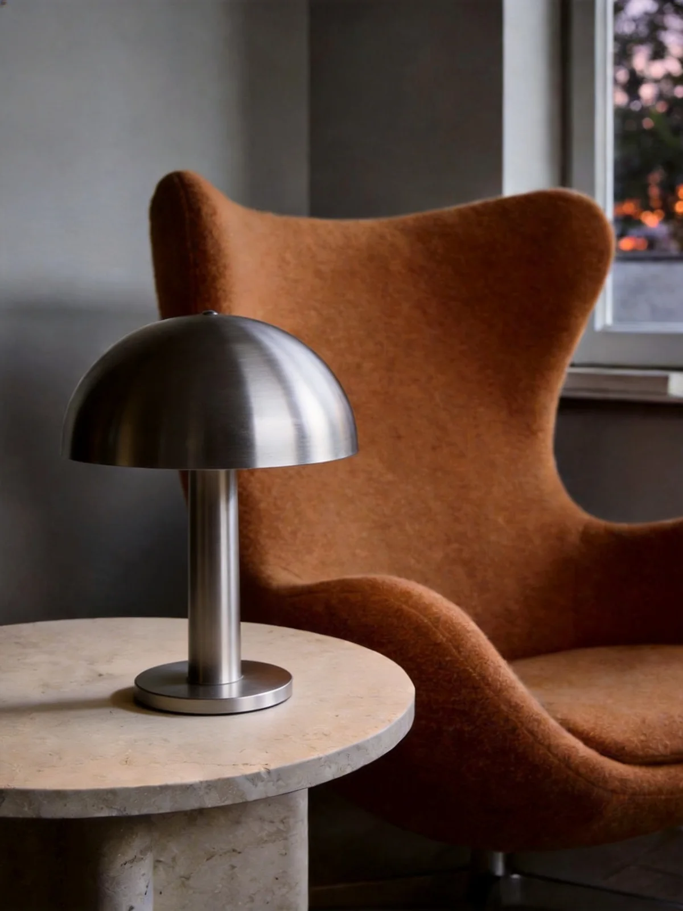
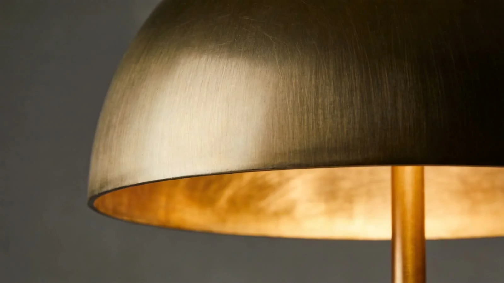

The hemisphere study
One continuous curve.
A quieter kind of presence.
A simple silhouette changes a room. Brushed metal picks up the light around it. A generous curve turns a functional object into something you want to keep close.

Room to settle in
At home.
Anywhere.
Beside the chair you always choose. On the desk you make your own. Somewhere the smallest detail can change the whole feeling.
Find its place ↗
A considered choice
Where does
it belong?
A softer corner
Make a small place your own.
Pair the sculptural silhouette with a low table, warm textiles and somewhere comfortable to pause. Save this styling direction.
A little clarity
Give the day a better shape.
Keep the surrounding objects simple. Let the metal surface and rounded form soften a practical workspace.
A first impression
Something to come home to.
Create a calm arrangement with natural stone, a favourite object and a little breathing room.
ORBIT OBJECTS